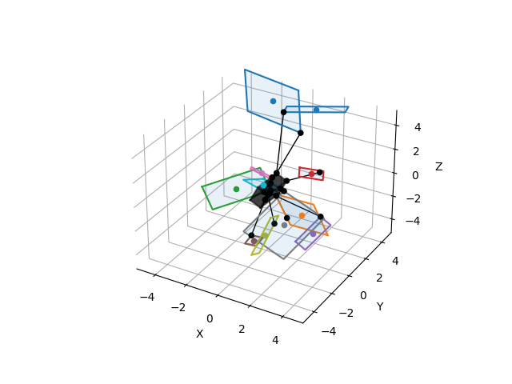

Note
Click here to download the full example code
Distance from rectangle to box¶
Out:
6.158410582694057
2.641085488169706
0.44161411887462243
4.514717170138337
3.816740509633549
1.916622946277794
2.7350752506669935
0.5105723966158995
2.6940146400922127
3.1574352234336507
5.4591495290760905
2.2101862098279987
0.5037125183096949
2.8100868791164557
5.616442514472597
4.129114504821131
0.434435725917719
3.7160268814235264
3.536471982506936
1.2910213385032527
0.7534742337535811
2.5993351343219526
1.3379156245401191
4.943564005613119
0.7255720599912365
0.42284080012609265
0.9616146920714768
0.6705612340278081
6.907315591841045
0.5636888507878632
0.6540412837765144
2.109378366875959
1.9147530484983157
4.932417715669764
1.757179641696137
1.3695879901269923
2.0247626214548715
0.7233951671241937
2.1854919472670282
0.21566149705572651
0.410121776733255
1.070174236462977
3.199848218660875
5.591436257055188
0.9194187556174591
4.39032850973214
5.031446456140428
2.128089277093525
4.05093397797027
5.295351189506589
4.650686016042218
3.8374746800426185
4.0461576874594405
2.8673434991789035
2.0408205009469045
1.333889850965448
1.9295253545957332
0.5410264462167694
0.8525074877148474
4.549583340136513
2.1447501487604526
4.627653216843869
2.5809117692366437
3.362774018619297
3.20594098019593
0.0
2.5491364976387847
5.060779158134153
1.1288708997592238
0.541653802372401
1.0558122082601538
0.008180073359175359
4.850504033105888
3.628355062122066
4.338879716228917
3.2071195369011622
1.6947463815899368
3.7902149341269373
1.3349560588845435
0.7889160973955031
2.7952153210490653
0.6470829099200712
6.578327966883666
2.064459106276383
3.9962027398407733
2.3364578564593184
0.058791207818171175
2.1036004879635324
3.663961621521724
1.1634030208569854
accumulated_time=0.5592715740203857
print(__doc__)
import time
import numpy as np
import matplotlib.pyplot as plt
import pytransform3d.transformations as pt
import pytransform3d.plot_utils as ppu
from distance3d.distance import rectangle_to_box
from distance3d import plotting, random
random_state = np.random.RandomState(0)
box2origin, size = random.rand_box(
random_state, center_scale=0.1, size_scale=2)
ax = ppu.make_3d_axis(ax_s=5)
accumulated_time = 0.0
for i in range(90):
rectangle_center, rectangle_axes, rectangle_lengths = random.randn_rectangle(
random_state, center_scale=2.5, length_scale=5)
start = time.time()
dist, closest_point_rectangle, closest_point_box = rectangle_to_box(
rectangle_center, rectangle_axes, rectangle_lengths, box2origin, size)
end = time.time()
accumulated_time += end - start
print(dist)
if i > 10:
continue
plotting.plot_segment(
ax, closest_point_rectangle, closest_point_box, c="k", lw=1)
plotting.plot_rectangle(
ax, rectangle_center, rectangle_axes, rectangle_lengths,
show_axes=False)
print(f"{accumulated_time=}")
ppu.plot_box(ax=ax, A2B=box2origin, size=size, wireframe=True, alpha=0.5)
ppu.plot_box(ax=ax, A2B=box2origin, size=size, wireframe=False, alpha=0.5)
pt.plot_transform(ax=ax, A2B=box2origin, s=0.1)
plt.show()
Total running time of the script: ( 0 minutes 0.753 seconds)